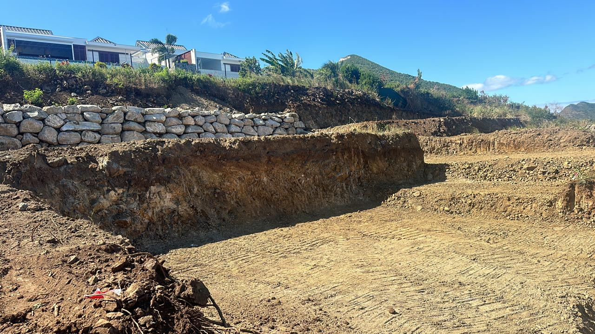
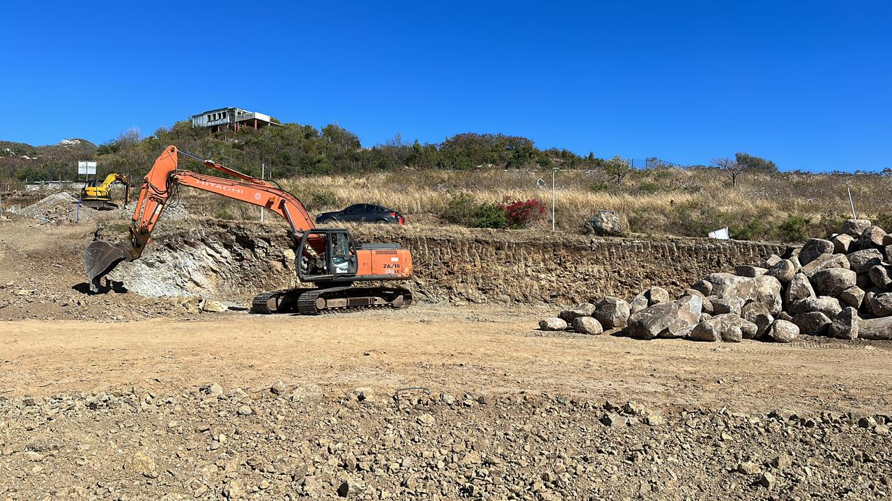
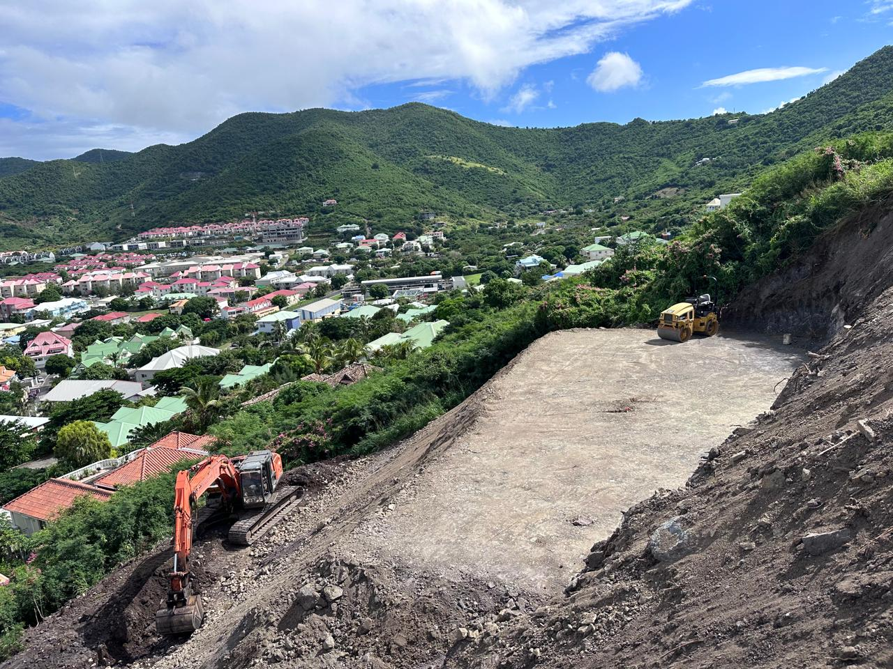
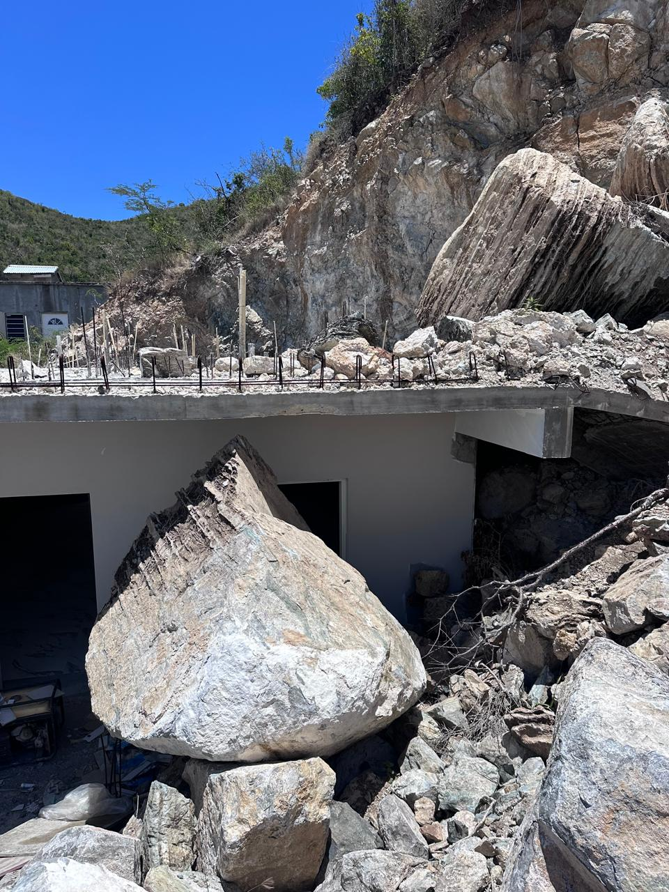
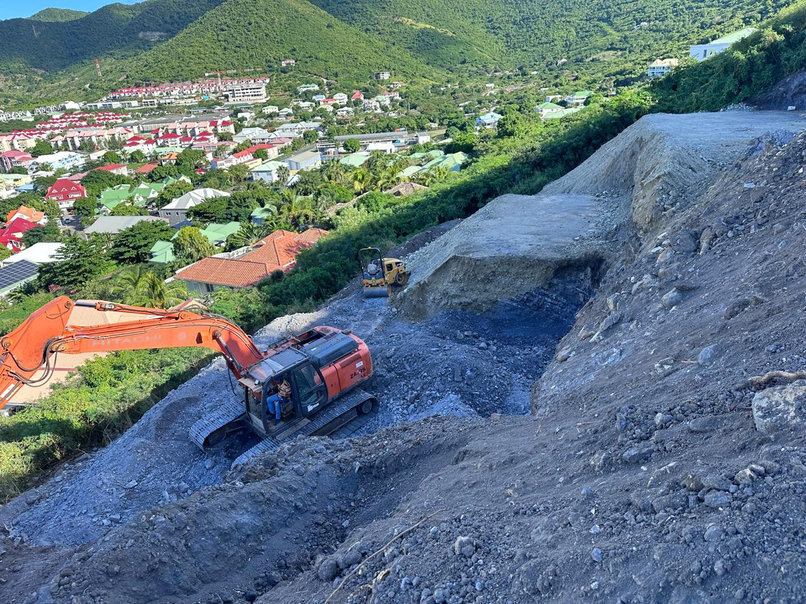
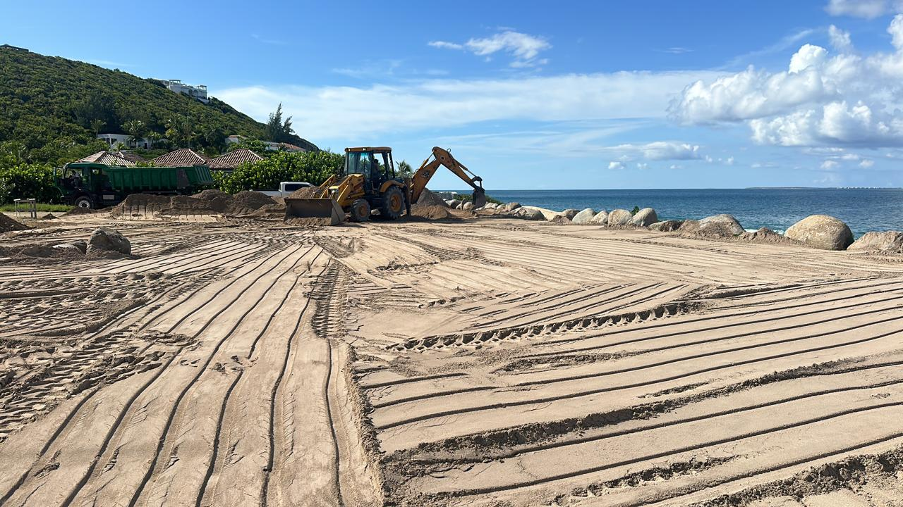
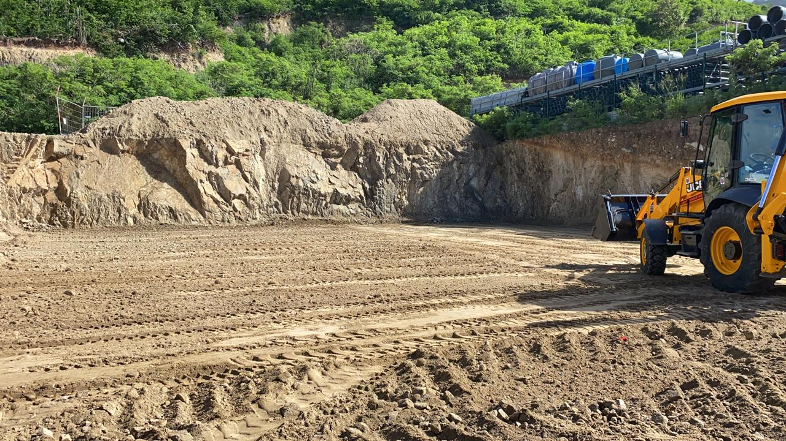
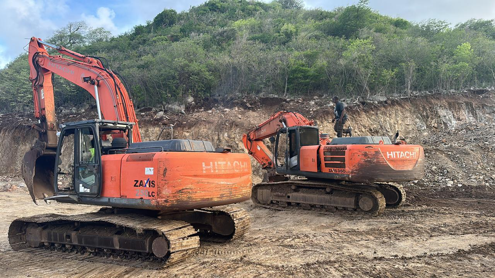

Hope Hill — Villa Larimar
Terrassement de la plateforme pour la villa Larimar sur les hauteurs de Hope Hill. Décapage, fouilles et mise à la cote sur terrain en pente avec vue panoramique.
Dix années de chantiers sur l'île. Lotissements, villas, hôtels, voiries, réseaux, plateformes — chaque réalisation est la preuve de notre engagement envers la qualité d'exécution et la satisfaction de nos clients à Saint-Martin et Sint Maarten.

Terrassement de la plateforme pour la villa Larimar sur les hauteurs de Hope Hill. Décapage, fouilles et mise à la cote sur terrain en pente avec vue panoramique.

Travaux de terrassement général sur le site Hope Estate. Décapage, nivellement et préparation de la plateforme aux cotes définitives du projet.

Réalisation du dallage béton sur le chantier Hope Estate. Mise en place du coffrage, coulage et finissage soigné pour une surface plane et durable.

Terrassement du projet Oria dans le lotissement les Hauts de la Baie. Préparation des plateformes individuelles avec gestion des déblais et talus.

Terrassement du projet Astrolabe : décapage, fouilles en déblai et création de la plateforme de construction sur ce secteur résidentiel prisé de l'île.

Terrassement d'un chantier résidentiel à Concordia. Préparation du terrain, fouilles et mise en place des plateformes pour la construction de villas.

Opération de démolition complète sur le site Little Key. Déconstruction, évacuation des gravats et remblaiement pour préparer la plateforme au nouveau projet.

Intervention avec brise-roches hydraulique pour terrassement en terrain volcanique difficile. Fracturation et évacuation des masses rocheuses avant plateforme.

Viabilisation complète d'un secteur : voirie interne, réseaux EU/EP, alimentation eau potable, réseaux secs et éclairage public. Coordination multi-lots assurée.

Création d'espaces extérieurs soignés : terrassement paysager, allées, parkings, clôtures et finitions. Intégration harmonieuse dans l'environnement local.

Aménagement des abords d'une propriété résidentielle : chemins d'accès, terrasses et traitement paysager des espaces verts autour de la construction.

Terrassement et création d'une plateforme de construction plane. Décapage, fouilles, compactage en couches et contrôle des cotes finies.

Vue de chantier après terrassement complet. Plateforme nivelée, talus sécurisés et accès engins aménagés pour la phase suivante de construction.

Mise en place du ferraillage avant coulage du béton. Treillis soudés et aciers de structure positionnés avec soin pour garantir la résistance structurelle.

Réalisation d'une plateforme prête à bâtir sur terrain pentu. Terrassement en déblai/remblai, compactage dynamique et vérification des portances.

Plateforme en cours de réalisation avec engins de terrassement. Mise à niveau des couches de forme pour accueillir les fondations du futur bâtiment.

Aperçu du parc matériel de Geotech Caraïbes : pelles mécaniques, compacteurs et engins de terrassement maintenus en condition opérationnelle permanente.
Contactez Geotech Caraïbes pour discuter de votre projet de terrassement, VRD, plateforme ou réseaux à Saint-Martin. Devis gratuit, réponse rapide.